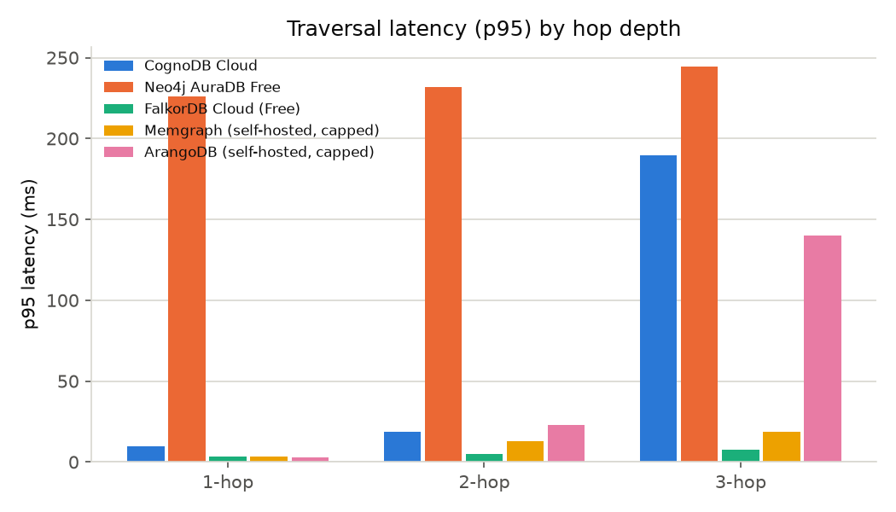
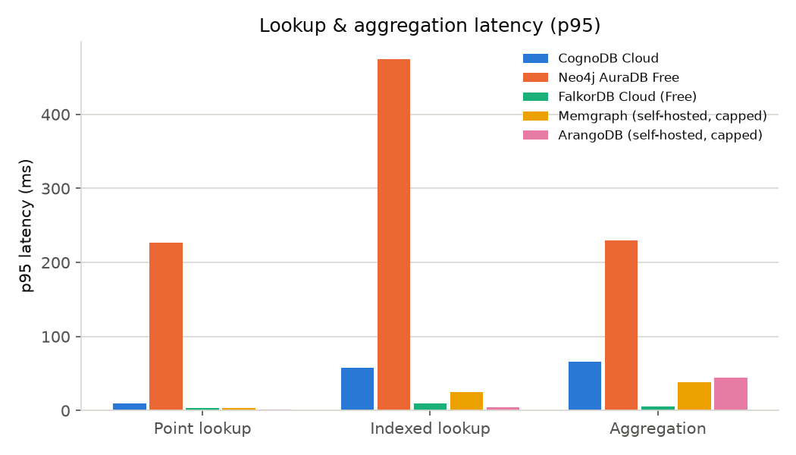
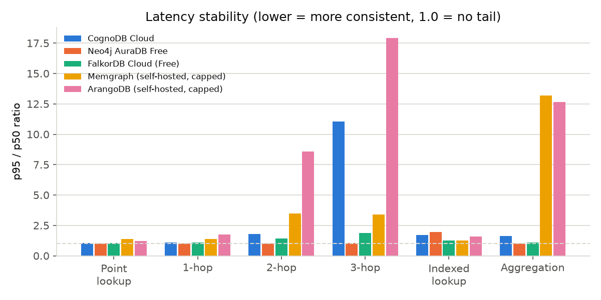
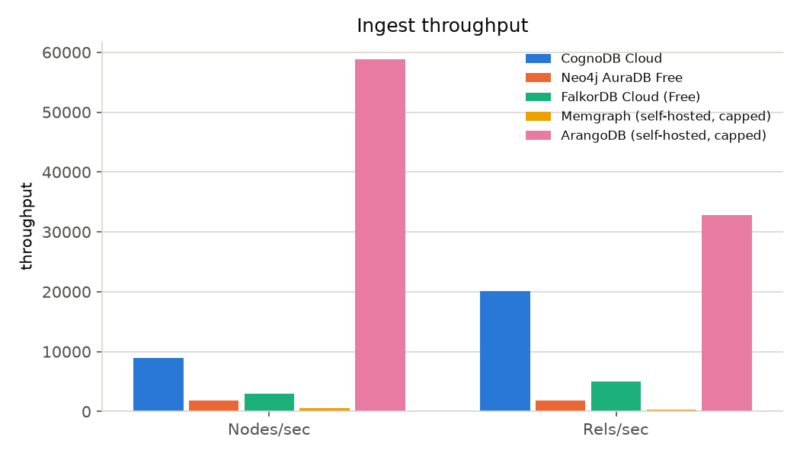
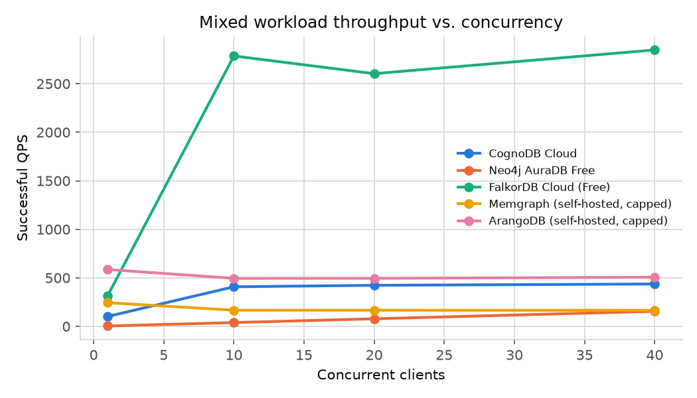
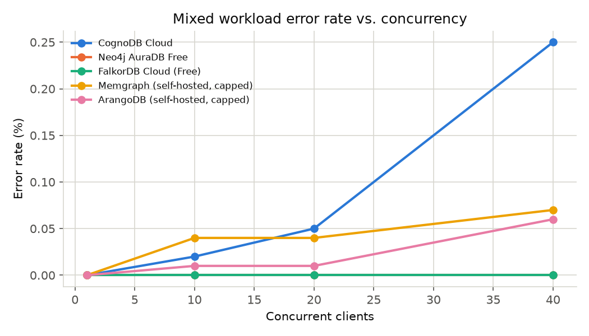

make report. For the reproducible source of truth, see RESULTS.md and results/raw/*.json.| Workload | Winner | Value |
|---|---|---|
| Point lookup (p95) | ArangoDB (self-hosted, capped) | 1.23 ms |
| Indexed lookup (p95) | ArangoDB (self-hosted, capped) | 4.87 ms |
| 1-hop traversal (p95) | ArangoDB (self-hosted, capped) | 2.92 ms |
| 2-hop traversal (p95) | FalkorDB Cloud (Free) | 5.03 ms |
| 3-hop traversal (p95) | FalkorDB Cloud (Free) | 7.78 ms |
| Aggregation (p95) | FalkorDB Cloud (Free) | 5.70 ms |
| Ingest throughput (nodes/sec) | — | no data |
| Ingest throughput (rels/sec) | — | no data |
| Mixed workload QPS @ 1 clients | ArangoDB (self-hosted, capped) | 585.89 qps |
| Mixed workload QPS @ 10 clients | FalkorDB Cloud (Free) | 2785.74 qps |
| Mixed workload QPS @ 20 clients | FalkorDB Cloud (Free) | 2603.51 qps |
| Mixed workload QPS @ 40 clients | FalkorDB Cloud (Free) | 2847.71 qps |
These are winners only for this specific dataset, query set, and resource-capped setup — not a general claim about which database is "best."
| Platform | Status | Timestamp (UTC) |
|---|---|---|
| CognoDB Cloud | ok | 2026-08-20T18:06:38.278072+00:00 |
| Neo4j AuraDB Free | ok | 2026-08-20T18:11:22.766372+00:00 |
| FalkorDB Cloud (Free) | ok | 2026-08-20T14:03:34.295831+00:00 |
| Memgraph (self-hosted, capped) | ok | 2026-08-20T18:01:37.354189+00:00 |
| ArangoDB (self-hosted, capped) | ok | 2026-08-20T17:54:59.233553+00:00 |





